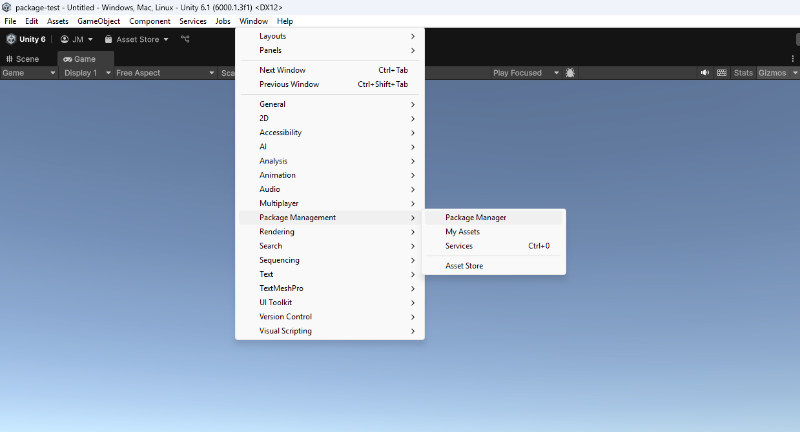
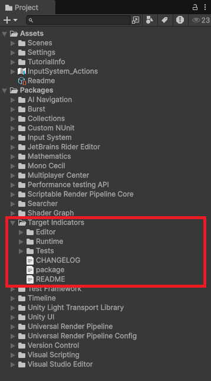
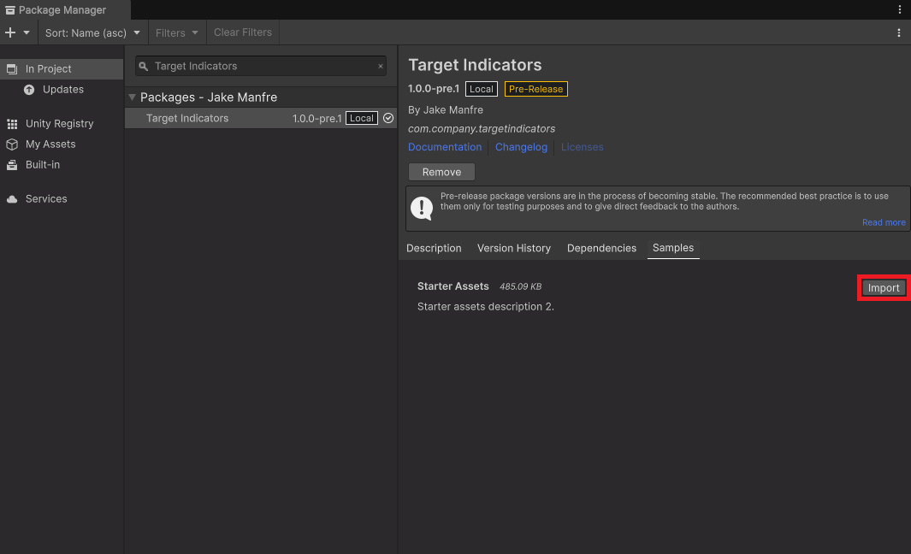
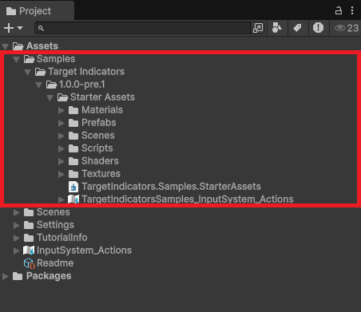

Install package
Once you have purchased Target Indicators on the Unity asset store, follow these steps to add it to your project:
- Open the package manager via Window > Package Management > Package Manager.

- In the package manager window navigate to My Assets, search for Target Indicators and click Download.

- After the packages has downloaded you should find the package contents in the Project Window > Packages > Target Indicators.

Optional samples import
You also have the option to import the samples assets if you want a premade indicator visualizer system for easy use in your project or as a reference for how to use target indicators API.
- Navigate to the package in the package manager and import the samples.

- You can find the imported samples in Assets > Samples > Starter Assets.

- Learn more about how to use samples.